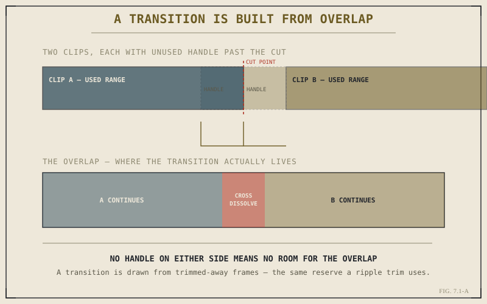

A transition looks, on the surface, like the simplest thing this book has covered: drag an effect onto a cut, and two clips blend into each other instead of switching instantly. That simplicity is misleading. A transition isn't decoration applied on top of a cut — it's a structural requirement that reaches back into territory Part V already covered, and understanding what it's actually asking of your footage explains both why transitions sometimes fail and what they're genuinely communicating when they work.
A Transition Is Overlap, Not Decoration
A hard cut is instantaneous: the last frame of one clip is immediately followed by the first frame of the next, with no overlap between them anywhere on the timeline. A transition can't work that way, because blending two images together requires both images to exist at the same moment — which means a transition needs the outgoing clip and the incoming clip to genuinely overlap in time, each contributing real frames to the same stretch of timeline. That overlapping region is where the transition actually happens; everything outside it is an ordinary cut, exactly as before.

The transition lives entirely inside the overlap — a region that has to be built from real, unused frames on both sides.
Why a Transition Needs Handles You Might Not Have
This is exactly where Chapter 5.3's trim vocabulary becomes directly relevant. The extra frames a transition needs on either side of a cut are the same handle frames a ripple or roll trim draws from — footage that was recorded but trimmed away, sitting unused just past the current edit point. If a clip has been trimmed all the way to its actual start or end, with no handle left in reserve, there's nothing left for a transition to overlap into, and Resolve will refuse to build one at full length, or refuse entirely. This is not a bug or an arbitrary limitation; it's the direct, physical consequence of what a transition structurally requires, and it's exactly why leaving a little handle unused during earlier trimming — rather than cutting every clip to the exact frame — is a habit worth having even before you know you'll want a transition there.
A transition isn't added on top of a cut — it's built from frames the cut left unused. No spare handle, no transition, regardless of what the effect's settings claim to offer.
What a Transition Is Actually Communicating
Beyond the mechanics, it's worth being deliberate about what a transition tells an audience, because a hard cut and a dissolve are not interchangeable stylistic choices — they carry genuinely different meaning. A hard cut implies continuity: this next moment follows immediately, in the same reality, with no gap being acknowledged. A dissolve implies passage — time elapsing, a shift in location or state, a softer connection between two moments that a hard cut would present as more abruptly adjacent than they actually are. Reaching for a dissolve by default, out of habit rather than intent, quietly tells an audience that time or reality shifted at every single cut, which is rarely what's actually true across a full sequence.
Where a Transition Lives: Between Clips, Not Inside Them
Structurally, a transition is its own object on the timeline, not a property attached to either clip — it sits visibly at the join between two clips, spanning the overlap region, and can be selected, trimmed, or deleted independently of the clips on either side of it. This matters practically: adjusting a transition's length later doesn't mean re-trimming the clips themselves, only adjusting how much of their existing handle the transition draws into its overlap. Chapter 7.2 picks up directly from here, working through cross dissolves specifically and — just as importantly — when a hard cut is genuinely the better choice, given everything this chapter has just established about what each one is actually saying.
Key Concepts to Remember
- A transition requires two clips to genuinely overlap in time — it can't exist without real frames from both sides sharing the same stretch of timeline.
- That overlap is built from handle frames — the same reserve a ripple or roll trim draws from — so a fully trimmed clip has none left to give.
- A hard cut and a dissolve carry different meaning — continuity versus passage — not just a different visual style.
- A transition is its own timeline object at the join between clips, adjustable independently of the clips on either side.
Cross-References Forward
| → Ch. 7.2 | Cross Dissolves, Cuts, and When Not to Use Either — applying this chapter's overlap mechanics and meaning to real editorial choices. |
| → Ch. 5.3 | Revisit ripple and roll trims, the source of the handle frames a transition's overlap is built from. |
| → Ch. 4.4 | Revisit basic placement, the foundation a transition modifies at an existing edit point rather than replaces. |